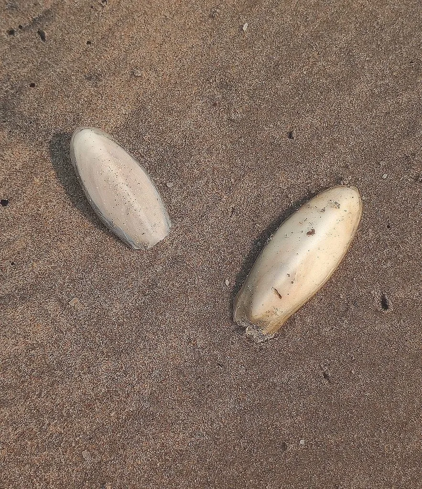

软体动物 · 动物界
曼氏无针乌贼 Sepiella maindroni

中国东海和南海常见的乌贼，因尾端没有尖针状骨质结构而得名，肉质细嫩，是沿海重要的经济头足类。
- 分类
- 门软体动物门纲头足纲目乌贼目科乌贼科属无针乌贼属
- 栖息环境
- 中国东海、南海的近岸浅海，底栖生活，春季洄游到浅海产卵
- 地理分布
- 中国东海和南海近岸海域，以浙江、福建沿海最为常见
- 保护级别
- 暂无评估；中国未列入国家重点保护野生动物名录（重要渔业资源）
物种志
曼氏无针乌贼体呈卵圆形、稍瘦长，胴部背腹稍扁，两侧环绕着狭窄的鳍。体色黄褐，背部密布细小的紫色或褐色斑点；与金乌贼不同，它的尾端没有突出的骨质针状结构，因此得名“无针”。胴长一般 10–15 cm，最大约 20 cm，体内有一块石灰质内壳。
曼氏无针乌贼分布于中国东海、南海的近岸海域，是底栖性头足类。它春季会洄游到近岸浅海产卵，把卵粒黏附在礁石和海藻上，卵常聚成一串串，像葡萄一样悬挂在水下。它是肉食性动物，捕食虾、蟹和小鱼，靠两条可迅速弹出的触腕捕捉猎物。曼氏无针乌贼寿命约 1 年，产卵后亲体死亡。它是中国东海重要的渔业资源，20 世纪后期因过度捕捞和环境变化，野生资源明显下降，浙江等地随后开展了增殖放流和产卵场保护，如今资源有所恢复。目前它没有IUCN 的正式评估，中国未将其列入国家重点保护野生动物名录。
形态与习性
- 食性肉食性，捕食虾、蟹和小鱼
- 胴长一般 10–15 cm，最大约 20 cm
- 寿命约 1 年，产卵后死亡
- 繁殖春季洄游到浅海产卵，卵黏成串附在礁石和海藻上
- 特征尾端没有尖针状骨质结构，“无针”之名由此而来
- 现状东海重要经济头足类，已开展增殖放流和产卵场保护
趣味知识
- 曼氏无针乌贼尾端没有尖针状结构，这是它和许多乌贼最明显的区别。
- 它产的卵常黏成一串串挂在礁石和海藻上，像一串葡萄。
- 曼氏无针乌贼是中国东海重要的经济头足类，浙江沿海已开展增殖放流。